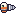
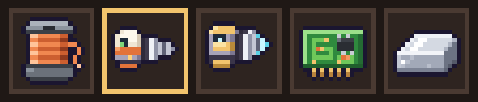
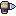
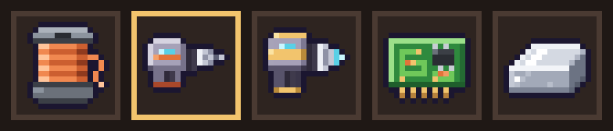
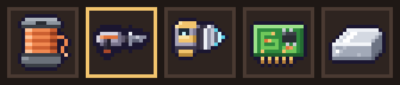

v0.6 Fundo M4 · Broca de mão nv.1 e nv.2
- 2 opções de par (A e B) de ícones 16x16: a nv.1 definitiva e a nova Broca de mão nv.2 (minera x1,5 e quebra rocha dura de gelo e basalto). A nv.2 se distingue da nv.1 pela cor de destaque (dourado em vez de laranja), corpo mais parrudo e ponta de diamante ciano.
- Estilo: das referências do dono (R1/R2) só a proporção e a leitura de cápsula; todo o desenho é original.
Opção A · cápsula da referência do dono
nv.1: corpo creme com visor e LED verde, faixa laranja, broca cônica prateada (o R2 da rodada 4, afinado). nv.2: a mesma cápsula e a mesma posição de visor e broca, mas em aço cinza com tampa, faixa e base douradas (o dourado das máquinas nv.2), LED ciano, broca mais grossa (7 linhas contra 5) com ponta de diamante ciano.
nv.1

nv.2
Hotbar (a nv.1 selecionada) e painel de receita 3x

Opção B · pistola de perfil
nv.1: a pistola do drill_side.png redesenhada limpa em 16 px (carcaça cinza, visor ciano, faixa laranja, cabo com base laranja, broca fina). nv.2: carcaça mais alta, tampa e faixa douradas, cabo mais grosso com base dourada, broca grossa com ponta ciano.
nv.1
nv.2

Hotbar (a nv.1 selecionada) e painel de receita 3x

Comparação com a atual (Y, provisória)


A Y é o quadro 0 do drill_side reduzido por nearest, com a broca e o contorno falhados e sem espaço pra diferenciar uma nv.2.
Pro Dev integrar
- Quando o dono escolher A ou B: copiar
icon_hand_drill_{O}.pngparaassets/sprites/icon_hand_drill.pngeicon_hand_drill_t2_{O}.pngparaassets/sprites/icon_hand_drill_t2.png(16x16, alpha 0/255, contorno #1b1630). - Sem mudança de âncora nem de escala: o jogo desenha em 2x no slot e 3x no painel de receita, como os outros
icon_*. - Gerado por
tools/sprites/v06_fundo_m4_broca.py(determinístico). Nada foi instalado emassets/sprites/ainda.